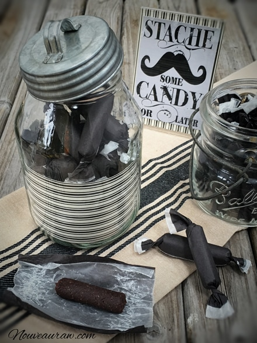
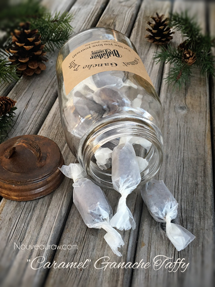

Twas Five Days Before Christmas…
Twas the night before Christmas and all through the kitchen, I was cooking and un-baking and moanin’ and twitching. I’ve been here for hours; I can’t stop to rest. This kitchen is a disaster; just look at this mess! So many recipes and techniques to share; I could email them daily, but do I dare? Do I dare?
 The bottom line is that I truly have too many recipes to share, and I didn’t want to fill your inboxes with all candy recipes from now until the new year. So I decided to release all the raw candy recipes that I had created for my family… all at once, but only sending you ONE email. This way, you can pick and choose if any flavors stand out to you. They are ALL wonderful, but I realize that we are getting down to the wire for Holiday treats.
The bottom line is that I truly have too many recipes to share, and I didn’t want to fill your inboxes with all candy recipes from now until the new year. So I decided to release all the raw candy recipes that I had created for my family… all at once, but only sending you ONE email. This way, you can pick and choose if any flavors stand out to you. They are ALL wonderful, but I realize that we are getting down to the wire for Holiday treats.
I don’t know about you… but I am ready for savory dishes! I have been feeling like a Willy Wonky and the Raw Candy Making Factory as of late. Hehe, I must say that it has been a pure joy sharing all these treats with our loved ones… right down to the mailman.
Happy Holidays!
It has been such a wonderful holiday time, and to top it off, we finally got our snow load of the season. It has been just magical. I thought I would share a photo that I took as we were walking along our driveway. The trees look absolutely majestic as they hold the snow. Believe it or not, but this photo makes me feel warm and cozy inside. hehe
Anyway, I best get moving along on this post. Below I have shared a picture and link to each of the candies that I just shared on my site. I hope you find some inspiration and have a wonderful time in the kitchen, making them. Blessings, amie sue
Peppermint Tootsie Chews

Pumpkin Spiced Tootsie Chews

Chocolate Fennel Tootsie Chews

Raspberry Chocolate Tootsie Chews

Sassy Cinnamon Tootsie Chews

Raspberry Tootsie Chews

Oldfather “Licorice” Logs

Apricot Sesame Candy Chews

Fig Chews

Salted Honey Nougat Candy Bars

Butterscotch Tootsie Chews

Salted “Caramel” Ganache Truffles

“Caramel” Ganache Taffy

© AmieSue.com